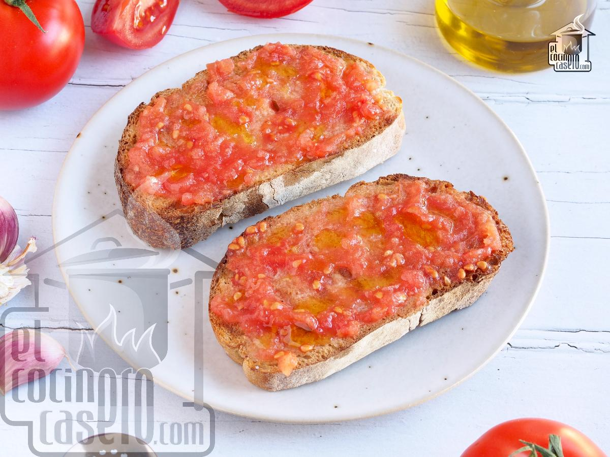

Pan con Tomate

Description
Sometimes the simplest meals are the best meals. One of the best dishes I've ever eaten was a tomato bisque soup, and this recipe for pan con tomate (Spanish tomato bread) is similar in its simplicity.
There's only 3 ingredients: a large tomato, two slices of crusty bread, and a garlic clove. You should include some olive oil and salt as well, to taste. This will help amplify the flavor of the tomato and garlic
Ingredients
- 1 large tomato, chopped
- 2 slices crusty bread
- 1 clove garlic, halved
- 1 tablespoon extra-virgin olive oil, or to taste
- sea salt to taste
Steps
- Place tomato in a blender; blend until smooth.
- Toast the bread until browned, 1 to 3 minutes. Rub each slice of toast with garlic; this is easier to do if the peel is left on.
- Top each slice of toast with pureed tomato. Drizzle with olive oil and sprinkle with salt.